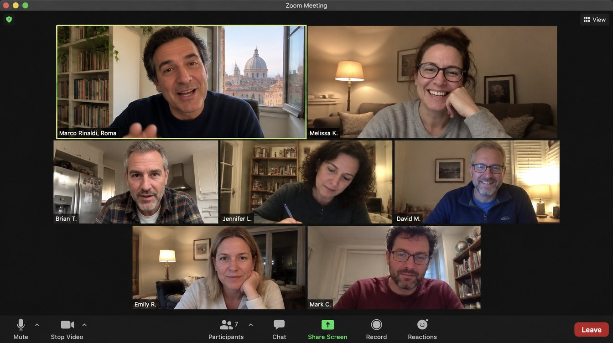
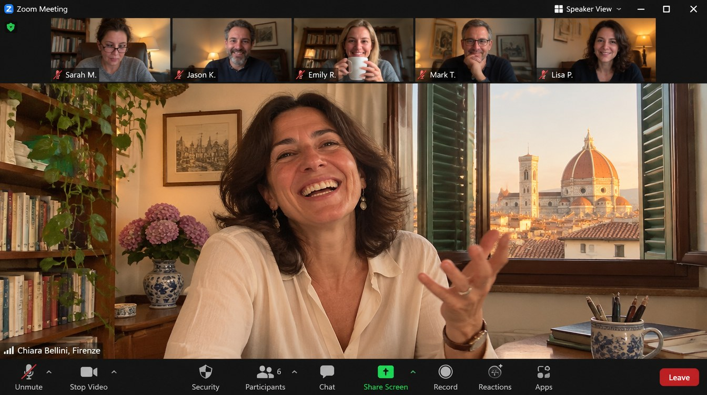
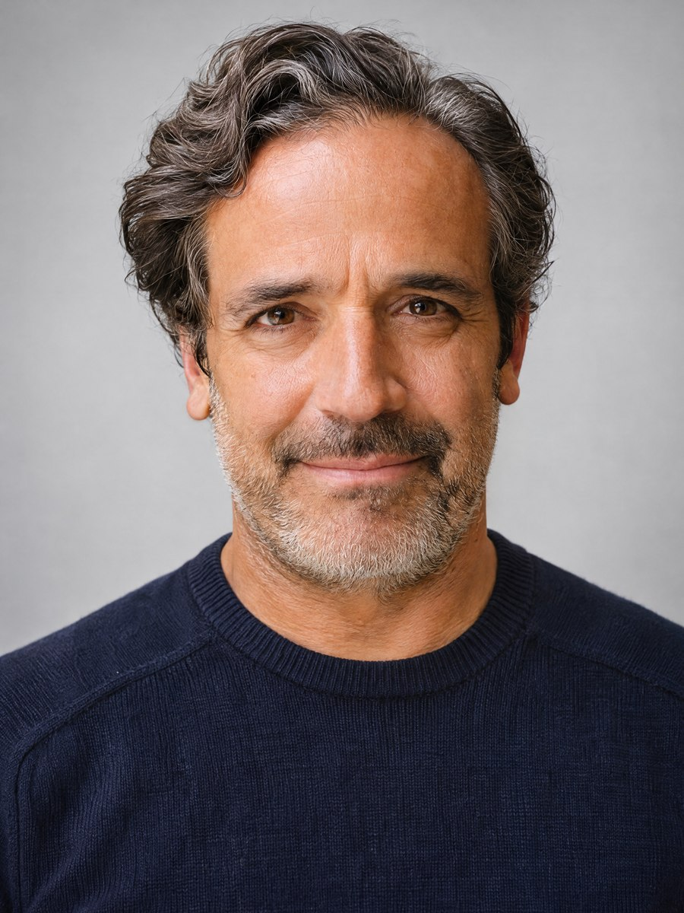

Assess and enrol
A short spoken placement conversation with a teacher, then an advisor call, puts you on the right rung.
Free placementClub Italia by eTeacher Group
Live Italian classes on Zoom for adults. Native teachers in seven Italian cities, 10 to 12 learners per class, four levels from your first words to B1.
 Excellent
ExcellentYour advisor will email your Zoom link and course materials within one working day.
🔒 Secure CheckoutFully refundable within 7 days of your first live lesson.
A small group of adults, one native teacher, eighty-five minutes on camera together.
Broadcast from the teacher's own city.
Ten to twelve learners.
Pairs and trios, every lesson.
Every class, in your library.



Marco, Rome (host) Sarah
Sarah David
David Elena
Elena Michael
Michael Anna
Anna Jonathan
JonathanFour levels from beginner to B1, plus conversation and culture courses. All live, all in small groups.
Language and culture, city by city. Grammar, vocabulary and the four skills, in twenty live lessons per level.
 A0 to A1.1
A0 to A1.1
Your first Italian, taught in Rome, the city where the language began.
 A1.1 to A1.2
A1.1 to A1.2
Everyday Italian from Florence, the city where the language was standardised.
 A1.2 to A2.1
A1.2 to A2.1
Confident daily Italian from Bologna, la Dotta, la Grassa, la Rossa.
 A2.1 to A2.2
A2.1 to A2.2
Real Italian for real life, between the warmth of Naples and the sharpness of Milan.
Spoken fluency first. Four Italian scenes, from the bar counter to the dinner table to the open road.
 Spoken A0 to A1
Spoken A0 to A1
Twenty live conversation sessions set at Italian cafés.
 Spoken A1 to A2
Spoken A1 to A2
Twenty live conversation sessions set at the Italian table.
 Spoken A2
Spoken A2
Twenty live conversation sessions for people who actually travel Italy, trains, hotels, museums, mountain refuges, sailing the Amalfi coast.
 Spoken A2 to B1
Spoken A2 to B1
Twenty live conversation sessions on the four things Italians actually do all day: opinion, humour, disagreement and storytelling.
Six sessions inside one Italian passion: the table, the Renaissance, the opera. Open to every level.
 Cultural, Any level
Cultural, Any level
Six live cultural sessions on the vocabulary and history of the Italian table, pasta, pane, vino, caffè, and the sacred rituals of the family meal.
 Cultural, Any level
Cultural, Any level
Six live cultural sessions on the Italian language of art history, from Giotto to Caravaggio, with the vocabulary that lets you read a museum wall label in the Uffizi.
 Cultural, Any level
Cultural, Any level
Six live cultural sessions on Verdi, Puccini and Rossini.
Course details
Every course is twenty live lessons of 85 minutes. Each lesson has a stated objective, a grammar focus, vocabulary and a real Italian setting.
By lesson 20 you will be able to
Assessed at the end of the course by an oral and written can-do assessment, mapped to the Council of Europe CEFR.
The 20-unit syllabus
By lesson 20 you will be able to
Assessed at the end of the course by an oral and written can-do assessment, mapped to the Council of Europe CEFR.
The 20-unit syllabus
By lesson 20 you will be able to
Assessed at the end of the course by an oral and written can-do assessment, mapped to the Council of Europe CEFR.
The 20-unit syllabus
By lesson 20 you will be able to
Assessed at the end of the course by an oral and written can-do assessment, mapped to the Council of Europe CEFR.
The 20-unit syllabus
Six named milestones, one clear arc of progress. You are placed by a spoken conversation, never a form.
Swipe the five steps →
Action-oriented, communicative learning aligned with the Common European Framework of Reference. You do not study Italian. You act in it.
The CEFR treats the learner as a social agent. Every lesson is a task: ordering, booking, negotiating, persuading.
Every unit is set in a real Italian place: a Roman bar, a Florentine workshop, a Bolognese market.
Art, food, opera and cinema are the material the language is taught through, assessed with can-do statements at every milestone.
Club Italia is independent and not affiliated with, nor endorsed by, the institutions cited.
Fashion, art, opera, wine and la dolce vita. The Italy every lesson is built from, the Italy you are learning to speak.
From the ateliers of Milan to the sartorie of Naples.
The palazzi and galleries of Florence, Rome and Venice.
Verdi, Puccini and Rossini, from the boxes of La Scala.
Brunello in Montalcino, Barolo in the Langhe.
An aperitivo on Lake Como as the sun goes down.
Positano, Capri and the Amalfi coast, in Italian.
Each teacher lives and broadcasts from a different Italian city. DITALS qualified. Real accents, real kitchens, real streets.
Excellent on TrustpilotMarco is a great teacher. Small class, everyone speaks, and you actually leave every lesson able to say something new.
Sarah T.Verified learnerIn three months I ordered dinner in Trastevere and the waiter answered in Italian for the whole meal.
 Diane WellerChicago, Level 1, Beginner
Diane WellerChicago, Level 1, BeginnerChiara teaches from a Florentine studio. You hear the city. The accent training is unreal.
Elena R.Verified learnerThe teacher cooks while she teaches. That single fact changed how I hear the language.
 Robert HensleyAustin, Conversation 2, At the table
Robert HensleyAustin, Conversation 2, At the tableTwelve people in class, all adults, all serious. Best language school I have used, and I have tried a few.
David L.Verified learnerI read the libretto of La Bohème with Alessandro over six sessions. I now understand why Italians cry at the third act.
 Sarah KimSan Francisco, Culture: Opera
Sarah KimSan Francisco, Culture: OperaSmall classes, real corrections, no drills. It felt like being tutored at a Florentine institute.
 James WhitakerLondon, Level 2, Elementary
James WhitakerLondon, Level 2, ElementaryChiara caught a mistake I had been making since 2014. In one live class.
 Linda BauerToronto, Level 3, Pre-intermediate
Linda BauerToronto, Level 3, Pre-intermediateMarco is a great teacher. Small class, everyone speaks, and you actually leave every lesson able to say something new.
Sarah T.Verified learnerIn three months I ordered dinner in Trastevere and the waiter answered in Italian for the whole meal.
Diane WellerChicago, Level 1, BeginnerChiara teaches from a Florentine studio. You hear the city. The accent training is unreal.
Elena R.Verified learnerThe teacher cooks while she teaches. That single fact changed how I hear the language.
Robert HensleyAustin, Conversation 2, At the tableTwelve people in class, all adults, all serious. Best language school I have used, and I have tried a few.
David L.Verified learnerI read the libretto of La Bohème with Alessandro over six sessions. I now understand why Italians cry at the third act.
Sarah KimSan Francisco, Culture: OperaSmall classes, real corrections, no drills. It felt like being tutored at a Florentine institute.
James WhitakerLondon, Level 2, ElementaryChiara caught a mistake I had been making since 2014. In one live class.
Linda BauerToronto, Level 3, Pre-intermediateAcademic standards
Club Italia follows the same framework European universities and ministries use to measure language ability.
Every unit is written against the Council of Europe CEFR descriptors. Grammar progression follows the Profilo della lingua italiana of the Università per Stranieri di Perugia.
Every teacher is a native Italian speaker holding DITALS, the Università per Stranieri di Siena qualification for teaching Italian to foreigners.
A spoken placement before you start, can-do checks in every unit, and an oral and written assessment at the end of each course.
A Club Italia certificate stating your CEFR level after every course, and structured preparation for CILS, CELI and PLIDA from A2.
Your route to B1
Official Italian exams we prepare you for
Exams are sat at authorised centres in Italy or abroad. Club Italia is not an exam centre. How we prepare you ›
Every plan includes live lessons, recordings, Biagio and the certificate. Billed in US dollars. Seven day full refund.
Billed $336 monthly.
Billed once at $3,224.
Billed $876 for twelve weeks.
Three questions, an instant recommendation. Your teacher confirms it in a free placement conversation.
Tell us about your Italian and your goals. An advisor will walk you through the courses, the live classes and the plan that fits you.
Every class is live, taught by a native teacher broadcasting from Italy. Recordings are for revision, never a substitute.
Ten to twelve adults. Everyone speaks in every lesson and the teacher corrects each learner personally.
Twenty live lessons of 85 minutes (six sessions of 60 minutes for a capsule), the PDF syllabus, recordings, Biagio the AI tutor and a CEFR-mapped Club Italia certificate.
Yes, from A2 upward. You sit the exam at an authorised centre of the Università per Stranieri di Siena (CILS) or di Perugia (CELI). Club Italia is not an exam centre.
From $62 a week on the annual plan, $73 a week by term, $84 a week monthly. Seven day full refund from your first live lesson.
Native Italian teachers holding the DITALS qualification for teaching Italian as a foreign language, each in their own city.